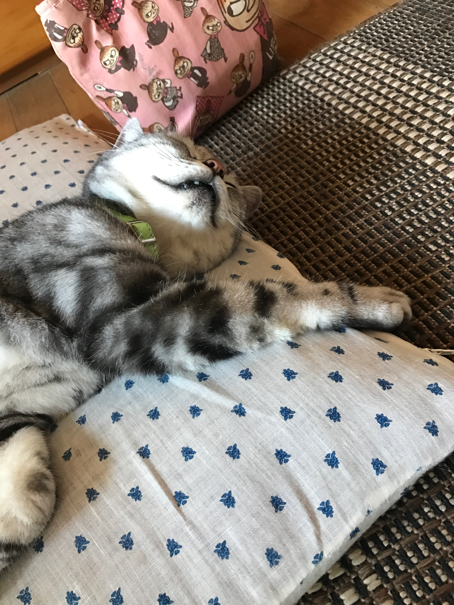

お年寄りのねこです！
ハルちゃんのプロフィール
カテゴリー：ペットの紹介
はじめまして、ハルちゃんです。 今年で１０歳になるお年寄りのねこです。 最近は歳のせいかだんだんと動きが鈍くなってきておりますがまだまだ、元気なハルちゃんです。 基本的に一日中家の中で寝ていますが朝と夜のご飯は欠かさず起きて台所にやってきます。
たまに脱走することがあります。 生まれてからあまり外には出たことがありません。外にはお友達がたくさんいるのですが一度いじめられケガをして夜遅くに帰ってきたことがあります。それ以来、外出することができなくなりました。 これからも元気に長生きしてもらいたいものです。